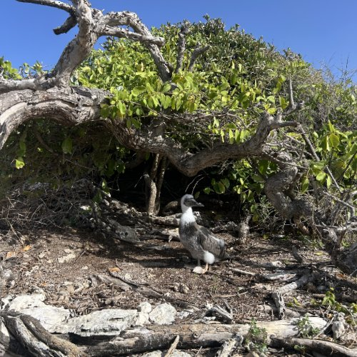
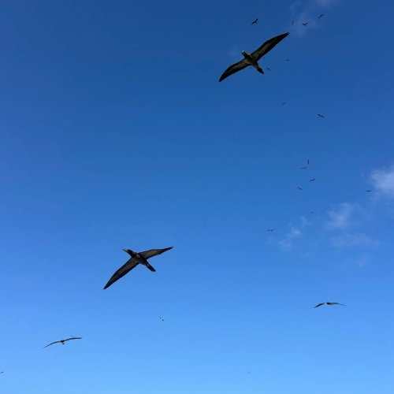
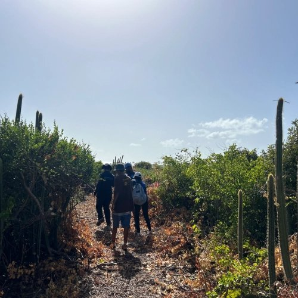
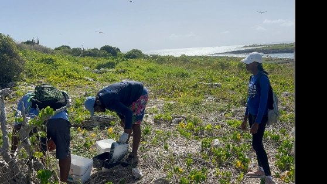
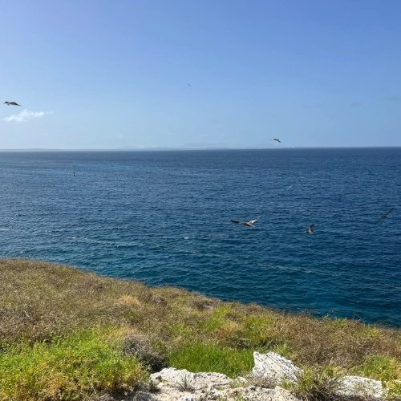

The Prickly Pear Cays aren't just home to hidden underwater caves and breathtaking beaches. They offer a safe home for thousands of nesting marine birds. Read more below.
A Conservation Legacy Since 1989
Founded in 1989, the Trust has been a bulwark of environmental protection in Anguilla ever since. Beyond tours of the island's rugged terrain, they occasionally open volunteer spots on research trips to surrounding cays. When the chance to join a visit to Prickly Pear West came up, we weren't about to miss it.
Dawn Departure from Sandy Ground
Our day started at the crack of dawn. By 6:30 we had gathered at
Prickly Pear West is just as ruggedly breathtaking as its more popular sister cay, Prickly Pear East — home to the famous Johnno's @ Prickly Pear. But it has its own unique, unforgettable character.
Untouched, natural and charmingly jagged - the twin cays of Prickly Pear are a rarely visited side of Anguilla that's always rewarding to explore.
A Prehistoric Paradise

Friendly neighbors on this rugged Anguilla gem.It felt like stepping into a prehistoric snapshot of native Anguilla. Endemic reptiles skittered past, unfazed by our presence. Fledgling Booby birds stared curiously as we passed by, completely unaware of any sense of danger.

Mating pairs of marine birds swooped and swirled in the sky above.The island is home to hundreds of nesting marine birds - the tiny island's sky is always a peppery delight of soaring magnificent frigate birds, laughing gulls and multiple varieties of the beloved Booby Bird.
Research Teams in Action

Southern Team beginning the trek inwardsWe split ourselves up into two teams. One team would track the checkpoints to the north, while the other team would survey the southern checkpoint.
This was a volunteer trip after all. We were actually accompanying a research team from the National Trust visiting the island... We were there to put in the work.

Researchers and Volunteers Restocking Bait at a CheckpointOur tasks included surveying checkpoints for signs of predator activity and monitoring nesting marine bird populations. It was important work and required some effort and focus.
Southern Views and Island Perspectives
We were lucky enough to get placed on the southern site team. On our two hour trek across the various checkpoints, we had endless views of Anguilla to the south.
@roamanguilla We tagged along and volunteered with the Anguilla National Trust on Prickly Pear, one of Anguilla's northwestern cays. Follow the rest of the story at https://roamaxa.app/blog #anguilla #fyp #anguillatiktok🇦🇮 #island #vacation #adventurea #birds #birdsoftiktok #trend #travel ♬ original sound - Roam Anguilla
We did a full loop around the southern end of the island and eventually made it back to our original checkpoint in about 3 hours. We were a little exhausted but still early so a few of us took a dip in the ocean while we waited.

Stunning southern views of mainland Anguilla from Prickly Pear West.A Meaningful Island Experience
Back on the mainland, The National Trust treated us to lunch before we said our goodbyes.
Join the Conversation